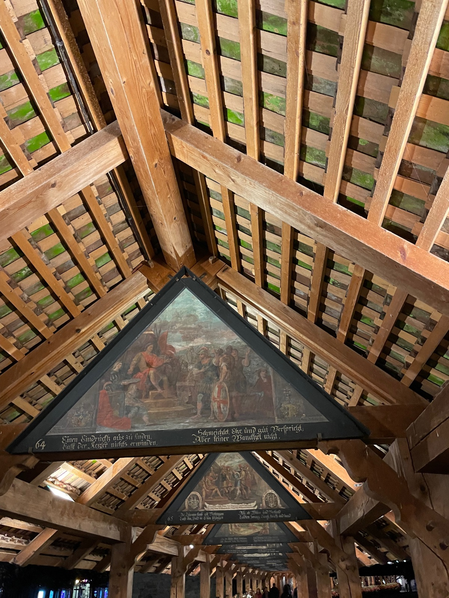
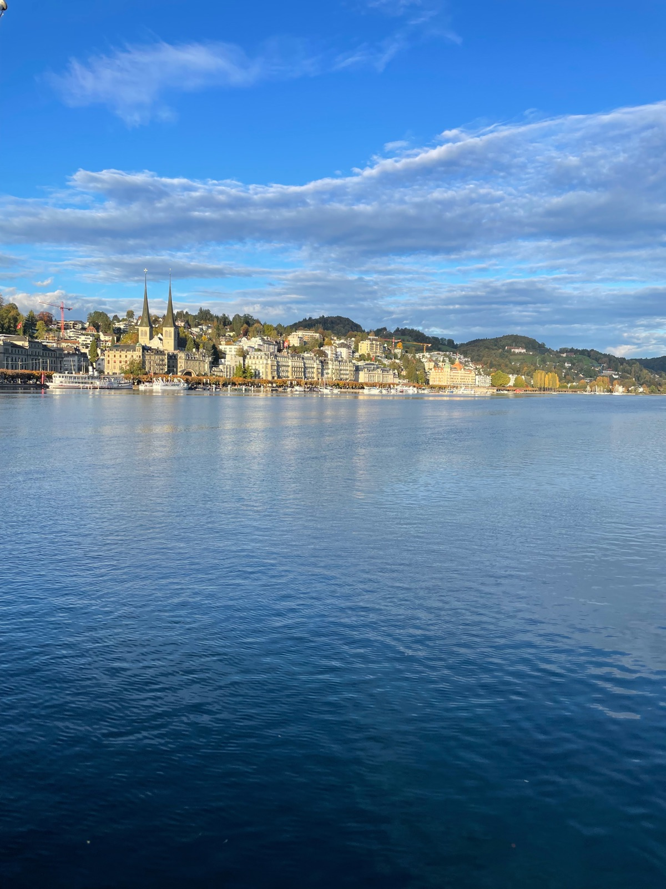
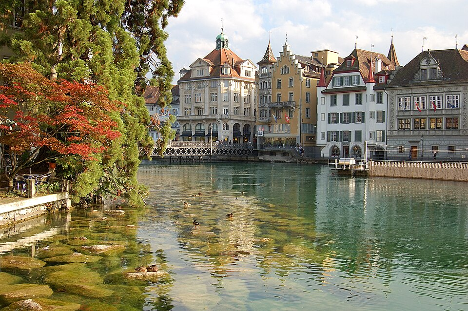
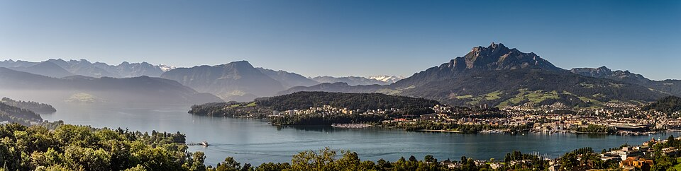
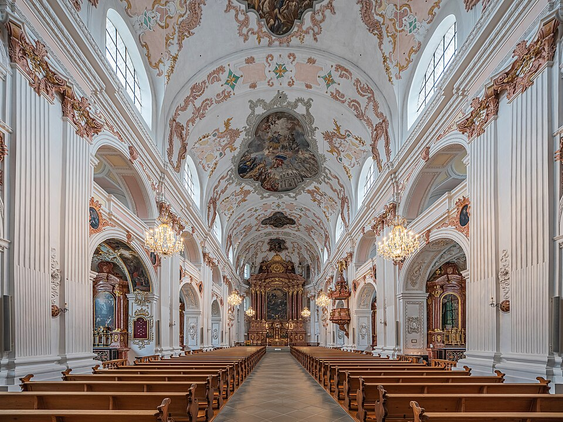
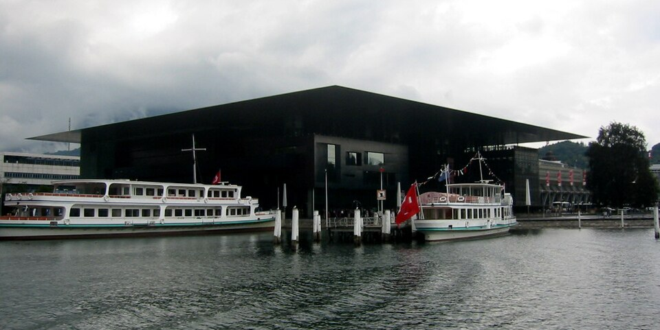

Charming 3-star B&B with 46 rooms in the Neustadt quarter. Features an art gallery and is just a 3-minute walk to Lucerne train station — perfect for day trips to Pilatus and Rigi.
Ohne Weizen, Roggen, GersteWithout wheat, rye, barley
Glutenfrei, bitteGluten-free, please
Grocery Stores
Coop — strong GF range, in-store cafeteria with marked GF items (closes at 4pm)
Migros — extensive GF selection, cafeteria with labeled allergen options
Local GF Tips
Tibits at the train station upper level — pay-by-weight buffet with marked GF options
Swiss cuisine is naturally rich in potatoes, cheese, and meats — many dishes are inherently GF
Rösti (Swiss potato pancake) is often naturally GF but always confirm preparation
GF Score Breakdown
Dedicated GF Options
Menu Awareness
Staff Knowledge
Restaurant Density
Grocery Availability
8out of 10 · Easy
Lucerne is one of the easiest Swiss cities for celiac travelers. A dedicated GF bakery, celiac-aware restaurants, and well-stocked grocery stores make it very manageable.
GF Friendly Restaurants
8 places
100% GF
GF Options
Hotel
Ammos
GF Options
Greek · Mediterranean
Went here
GF Score
What to know
Menu clearly marked for GF. Complimentary GF bread on request. Staff are well-trained on celiac needs. Closed Mondays.
Incredible — so great to eat somewhere with so many GF options and to feel truly safe. The staff was incredibly kind. The kitchen specializes in GF and lactose-free cooking, with lots of risotto, GF pizza, and carbonara options.
Europe's oldest covered wooden bridge (1333), decorated with 17th-century paintings depicting Lucerne's history. The adjacent Water Tower is the city's most photographed monument.
Crossing the River Reuss

BahnhofplatzLandmark
The main station square and gateway to the city. A busy transport hub with lake views, surrounded by shops and the impressive KKL building designed by Jean Nouvel.
Central Lucerne

Old Town LucerneHistoric
Car-free medieval center on the north bank of the Reuss. Fresco-adorned houses, cobblestone streets, and the historic Weinmarkt square where the Swiss Confederation was sealed.
North bank, River Reuss

Lake LucerneNature
One of Switzerland's most spectacular lakes, surrounded by mountain peaks. Take a historic paddle steamer for stunning panoramas of Pilatus, Rigi, and the Alps.
Central Switzerland

Jesuit ChurchHistoric
Switzerland's first large Baroque church (1666). The ornate rococo interior with pink marble and ceiling frescoes is a peaceful counterpoint to the bustling streets outside.
Bahnhofstrasse, Old Town

KKL LuzernLandmark
Jean Nouvel's striking Culture and Congress Centre with its cantilevered roof extending over the lake. World-class concert hall and art museum inside.
Europaplatz, lakefront

Neighborhoods
Old Town (Altstadt)Picturesque · Historic
Car-free medieval area on the north bank of the Reuss with fresco-adorned houses, cobblestone alleys, and the historic Weinmarkt square. Home to most of Lucerne's top restaurants and Chapel Bridge.
NeustadtContemporary · Vibrant
The 19th-century "new town" south of the river with hip shops, galleries, and nightlife. Home to Hotel Central Luzern and a 3-minute walk to the train station for mountain excursions.
Things to Do
Mountain Excursions
Mount Pilatus Golden Round TripPaid
The signature Lucerne experience: boat across the lake, ride Europe's steepest cogwheel railway to the summit, then descend by panoramic gondola and cable car. A full-day circuit.
The "Queen of the Mountains" offers gentle hiking trails, mineral baths at Rigi Kaltbad, and sunrise panoramas of the Alps. Accessible by cogwheel train from Vitznau or Goldau.
Glacier peak with the world's first revolving cable car. Walk the highest suspension bridge in Europe (Cliff Walk), ride the Ice Flyer chairlift, and explore glacier caves year-round.
Geological park with 20-million-year-old glacier pots, a mirror labyrinth, and a viewing tower overlooking Lucerne. Part natural wonder, part quirky Victorian-era attraction.
Family-run distillery crafting fruit brandies and liqueurs from Lake Lucerne region fruits. Tastings and tours available by appointment.
Seeburghof WineryPaid
Lakeside vineyard producing distinctive Lake Lucerne wines. One of Central Switzerland's oldest wine estates with tastings overlooking the lake.
Weinbau OttigerPaid
Award-winning winery on the shores of Lake Lucerne. Known for Pinot Noir and white blends from terraced lakeside vineyards.
Bio-Weingut SitenrainPaid
Organic vineyard practicing biodynamic winemaking on the sunny slopes above Lake Lucerne. Tours and tastings showcase their natural wines.
Getting Around
Buses
Comprehensive local bus network connecting the city center to surrounding areas and lake towns.
Lake Boats
Historic paddle steamers and modern motor vessels cruise Lake Lucerne, connecting lakeside towns and mountain railway terminals.
Cable Cars
Aerial tramways serve Pilatus, Rigi, and Titlis. The Titlis Rotair is the world's first revolving cable car.
Cogwheel Railways
Including Europe's steepest cogwheel railway to the summit of Mount Pilatus (48% gradient).
Transit Tip
The Tell Pass offers unlimited travel on trains, boats, buses, cable cars, and mountain railways throughout the Lake Lucerne region.
What to Pack
October
Celiac dining card (German)Explains celiac disease in German for restaurant staff
Essential
GF snack barsEssential for mountain excursions where food options are limited
Essential
Power adapter (Type J)Switzerland uses its own 3-pin plug — not the same as EU adapters
Switzerland
Swiss francsSwitzerland is not in the Eurozone; some smaller shops and mountain vendors prefer cash
Switzerland
Warm layers for mountain excursionsSummit temperatures can be 15°C+ cooler than lakeside
Lucerne
Rain jacketMountain weather changes fast; waterproof layer is essential
Lucerne
Comfortable walking shoesOld Town cobblestones and mountain trails need solid footwear
Lucerne
BinocularsIdeal for mountain viewpoints and spotting wildlife on Rigi and Pilatus
Lucerne
SwimsuitLake swimming is popular in summer and early autumn; mineral baths at Rigi Kaltbad are year-round
Lucerne
Travel Tips
Lucerne has the best GF dining density in Switzerland — 3 standouts: Sandra's Naschwerk, Ammos, and Trattoria della nonna.
The Golden Round Trip to Pilatus is unmissable — book a clear day for the best views and arrive early at the boat dock.
Chapel Bridge is most photogenic at sunrise before the crowds arrive. The interior paintings are the real highlight.
Coop and Migros cafeterias are reliable GF fallbacks when restaurants are closed. Note: Coop cafeterias close at 4pm.
Tibits at the train station upper level is a great pay-by-weight buffet with clearly marked GF options — perfect for a quick meal before a mountain excursion.
Have a tip or comment?
Found a great GF spot in Lucerne? I'd love to hear from you.